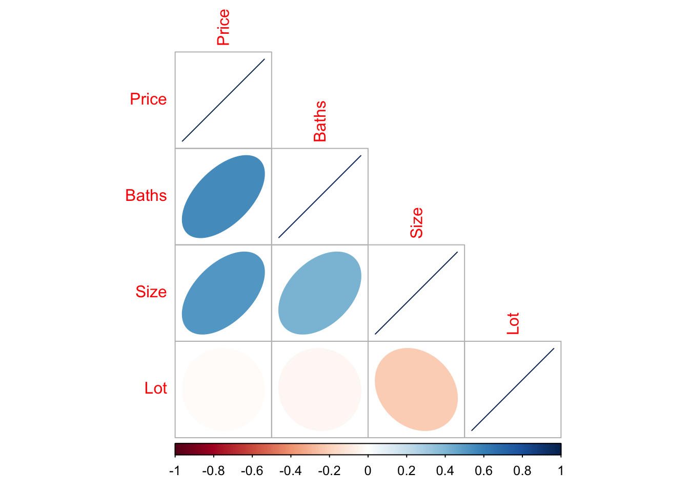
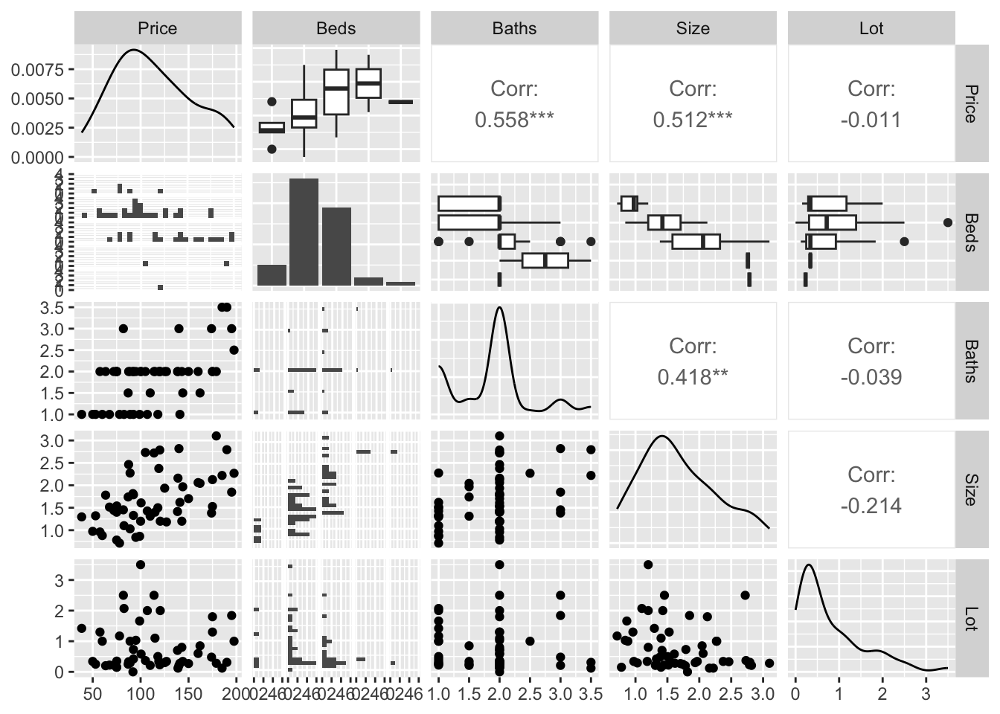

11 Correlation
We are again using the HousesNY dataset to show these commands. To highlight how it deals with categorical data, I have decided that number of beds is ordinal (which makes sense, you can’t have half a bed)
data("HousesNY", package = "Stat2Data")
# make the beds column a factor
HousesNY$Beds <- factor(HousesNY$Beds,levels=c(1,2,3,4,5,6),
labels=c("one","two","three","four","five","six"))11.1 Basics
The correlation coefficient is a measure of the LINEAR relationship between two values… All of these scatterplots have the same correlation! (meet the datasaurus)

As you can see better in this gif

11.1.1 Correlation not causation
Just because another variable is correlated with our response variable, it does not mean it HAS to be in the model. It could be:
-
A spurious correlation (two unrelated things happen to trend up together by chance - see https://www.tylervigen.com/spurious-correlations)
-
A confounding variable. There is a high correlation between damages by fire and the number of fire fighters attending. But that does not mean we should close all the fire stations to reduce fire damages! It simply means that there is a third variable (fire severity) controlling both fire-damages and number of firefighters attending.
- A true causal variable. Smoking (as far as we can tell) really does lead to higher rates of lung cancer.
11.2 Correlation basic code
To find the correlation coefficient between two variables, you can simply use the cor function e.g.
cor(HousesNY$Price,HousesNY$Lot)## [1] -0.0105759911.3 Correlation matrices
Sometimes its useful to see the correlation between all our columns to assess if there are relationships we might have missed (note, see above for what that means). To see the correlation between ALL columns we can make a “correlation matrix”
This is quick, but it can be misleading! For example, it might show a low correlation if the relationship is strong but curved and its easy to draw interpretations from high numbers even if they just occured by chance. But.. it does help to get a feel for the data.
There are MANY of ways to visualise correlation matrices here: https://www.r-graph-gallery.com/correlogram.html Feel free to choose a favourite, but here are three of mine
11.3.1 corrplot() from the corrplot library
A second option is in the corrplot package and you don’t need to worry about subsetting to numeric data. See
First, remember to install the corrplot package (if you haven’t already) and to add library(corrplot) to your library code chunk at the top of your script.
This code will only show you the pearson correlations between any NUMERIC columns in your data. This means that first we have to filter to our data to remove categorical and text columns.
# Filter to a new data frame with only numeric columns
house.numeric <- HousesNY[ , sapply(HousesNY,is.numeric)]
# Run the command. Different methods will lead to different visual formats
# see ?corrplot for more
corrplot(cor(house.numeric),method="ellipse",type="lower")
In this case, you can see that “Beds” is missing because we made it categorical.
11.4 ggcorrmat() from ggstatsplot
A second option is in the ggstatsplot package and you don’t need to worry about subsetting to numeric data. It automatically removes the categorical data for you.
First, remember to install the ggstatsplot package (if you haven’t already) and to add library(ggstatsplot) to your library code chunk at the top of your script.
To look at the correlation matrix of all the data, you can simply run.
ggcorrmat(HousesNY)
If you only want to look at some columns (say your data is huge), you can select them like this - where you’re choosing the COLUMN NAMES. See https://indrajeetpatil.github.io/ggstatsplot/articles/web_only/ggcorrmat.html many more options and examples using this command.

11.5 ggpairs() from GGally
Another package is called GGally and it makes mini scatterplots of all your variables, or looks at boxplots for categorical ones. For small datasets this is MUCH more useful than looking at a single number for the correlation coefficient because you can check for non linearity.
First, remember to install the GGally package (if you haven’t already) and to add library(GGally) to your library code chunk at the top of your script.
Then run the ggpairs command look at the correlation matrix. I STRONGLY SUGGEST ADDING CODE CHUNK OPTIONS message=FALSE, and warning=FALSE in the code chunk with this code, or it prints a load of unnecessary output.
# I have message=TRUE and warning=TRUE turned on at the top of my code chunk
ggpairs(HousesNY)
You can see in this case that you get the histograms of each variable, the scatterplots of numeric data (and the correlation coefficient), and grouped boxplots of any categorical data.